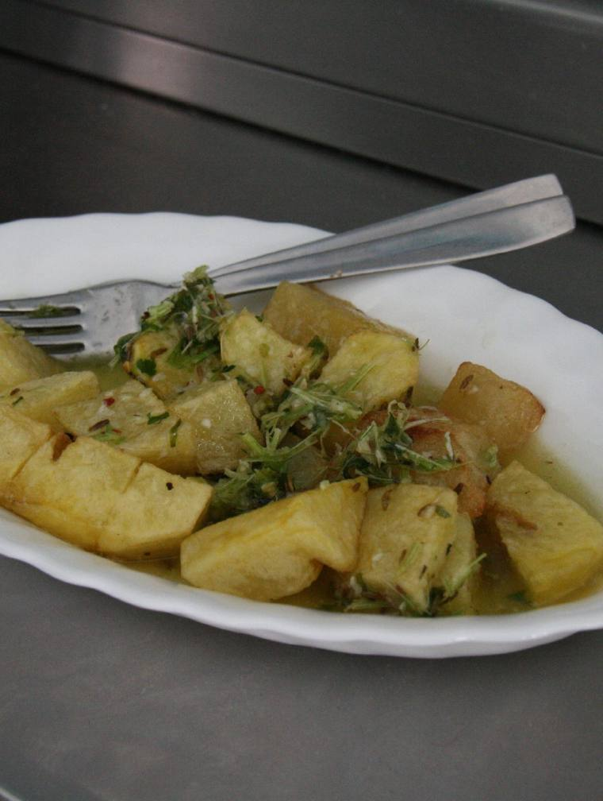

Sauces

Sauces
Mojo verde
La sauce verte des Canaries
Préparation : 20 min
Ingrédients (pour 6 personnes)
- 3 piments verts doux
- 1 tête d’ail
- 1 cuillère à café de cumin
- 10 brins de persil ou coriandre
- 170 g d’huile d’olive vierge extra
- 30 g de vinaigre de vin blanc
- 3 cuillères à soupe d’eau
- sel
Quantités adaptées. Les temps de cuisson ne sont pas recalculés.
- Piler cumin, ail et sel.
- Ajouter piments épépinés et herbes, piler jusqu’à une pâte homogène.
- Incorporer huile et vinaigre peu à peu, puis l’eau.
À conserver au froid, jamais au placard
Au réfrigérateur entre 0 et 4 °C : 3 jours au plus. Ne pas congeler. L’ail dans l’huile présente un risque de botulisme : jamais hors du froid.
AstuceLes deux mojos se servent avec des papas arrugadas : petites pommes de terre cuites en peau dans l’eau très salée, puis séchées.
D’après la Real Academia de Gastronomía. Traduit et reformulé.